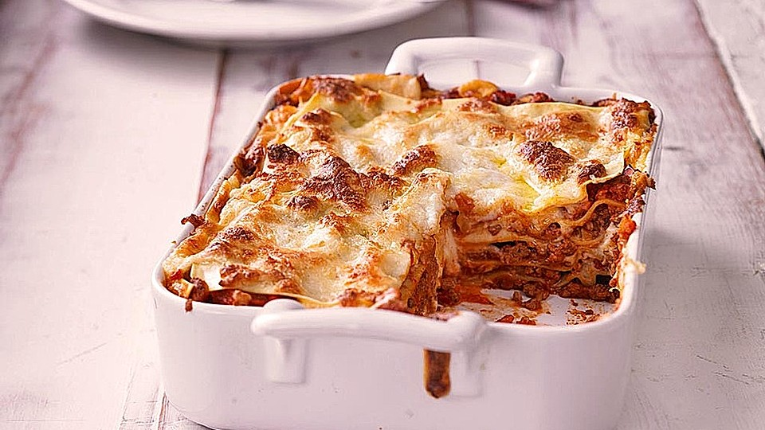

Lasagna

Lasagne Rezept. Schmackofatzig mit Käse und allem Klimbim!
In diesem Rezept geht es um mein Lasagne Rezept
Im Endeffekt ist es nur eine Bolognese, die noch in den Ofen kommt.
Zutaten
- 300g Rinderhack
- 2 Dosen Gehackte Tomaten
- Tomatenmark
- Karotten
- Stangenselerie
- Knoblauch
- Zwiebeln
- Lasagneplatten
- Brühe
- Sellerie, Karotten und Zwiebeln klein schneiden und in einem Topf mit Olivenöl und Butter anschwitzen.
- In einer Pfanne Rinderhack schwarf anbraten
- Nach 20 Minuten beides mischen und Tomatenmark hinzugeben
- Kurz ansetzen laseen und dann mit Brühe und Tomaten ablöschen
- Lasagneplatten in einer Auflaufformgeben und mit der Sauce schichten
- Käse drüber und ab in den Ofen